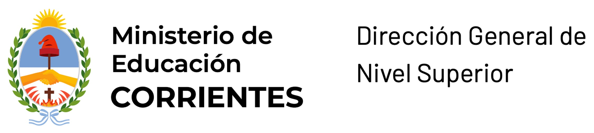
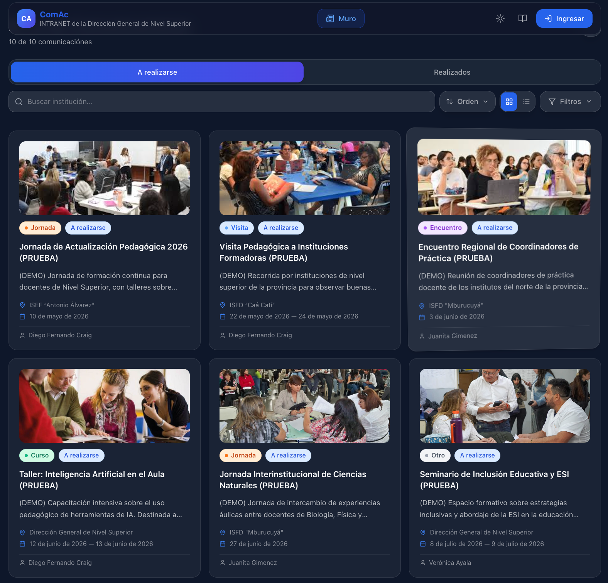

ComAc centraliza las actividades de cada instituto y de la Dirección, en una sola vista.
Dos columnas, lectura inmediata. Cada instituto publica; la Dirección y la comunidad leen.
Un clic desde el sitio institucional. Sin instalación, sin aplicación extra.
ComAc no es un piloto suelto. El Ministerio de Educación de Corrientes avala formalmente su uso como canal oficial del Nivel Superior.
Cada instituto designa a sus referentes con un formulario online. Así habilita su acceso de carga en ComAc.
Gestión de usuarios, altas, bajas, contraseñas y soporte técnico se canalizan por correo al equipo técnico de la DGES.
Del lanzamiento público a la carga completa de la comunidad de Nivel Superior.
ComAc se publica con enlace directo desde dgescorrientes.net. Sin registro para lectura.
Realizadas y a realizarse, uno al lado del otro. La vista principal del sistema.
Accesibilidad desde el primer día. Detección automática del sistema del usuario.
Respaldado por resolución interna del Ministerio de Educación de Corrientes.
Cada instituto designa referentes online. Es el paso que habilita la carga.
Carga inicial con los eventos institucionales del ciclo lectivo 2026.